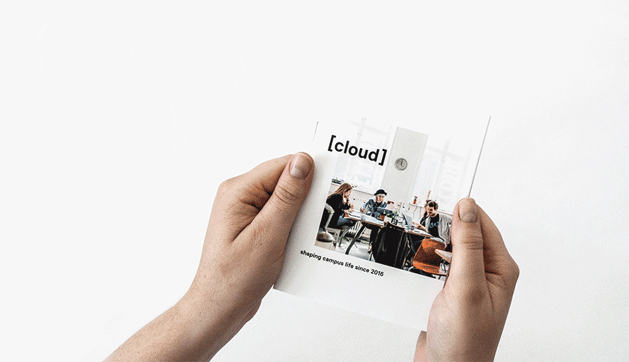
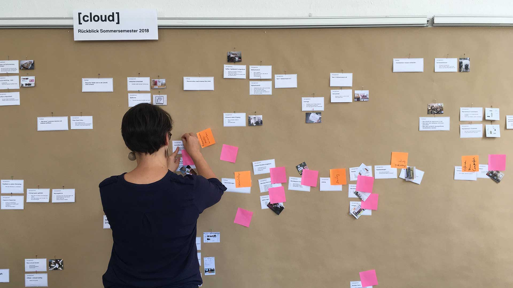
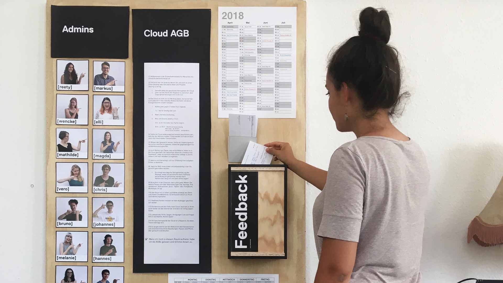
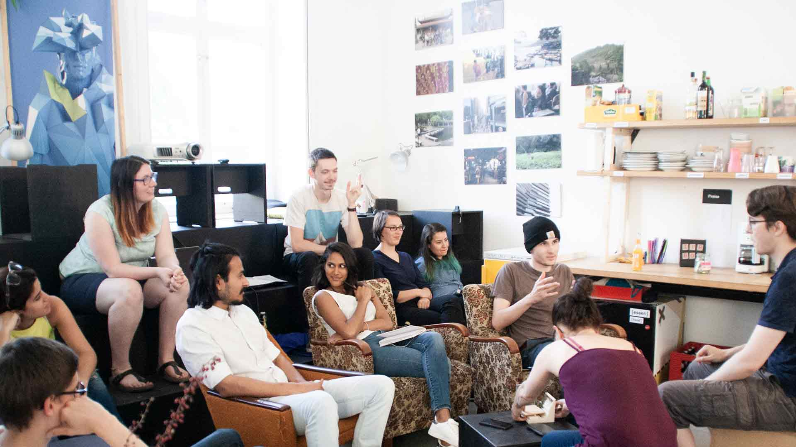
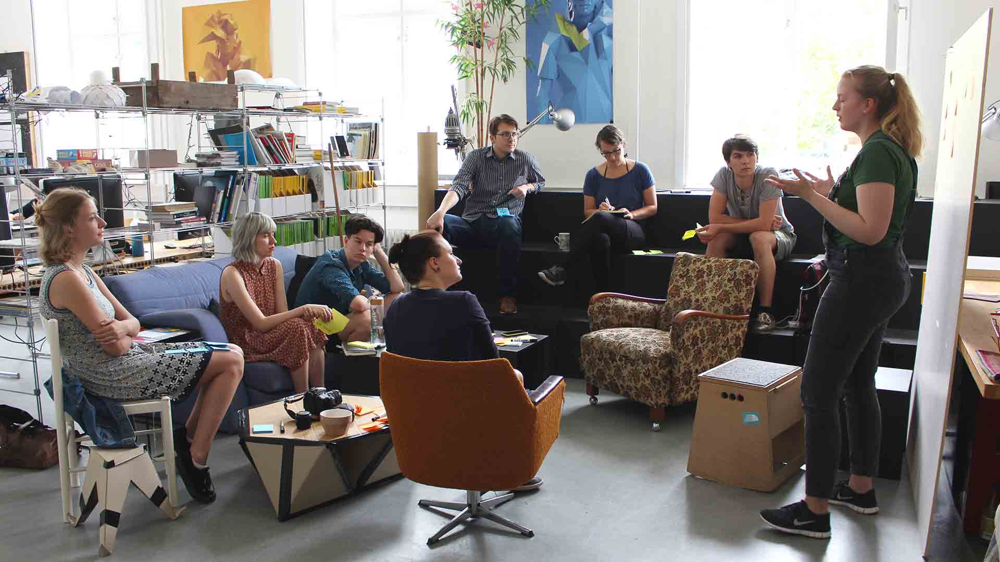
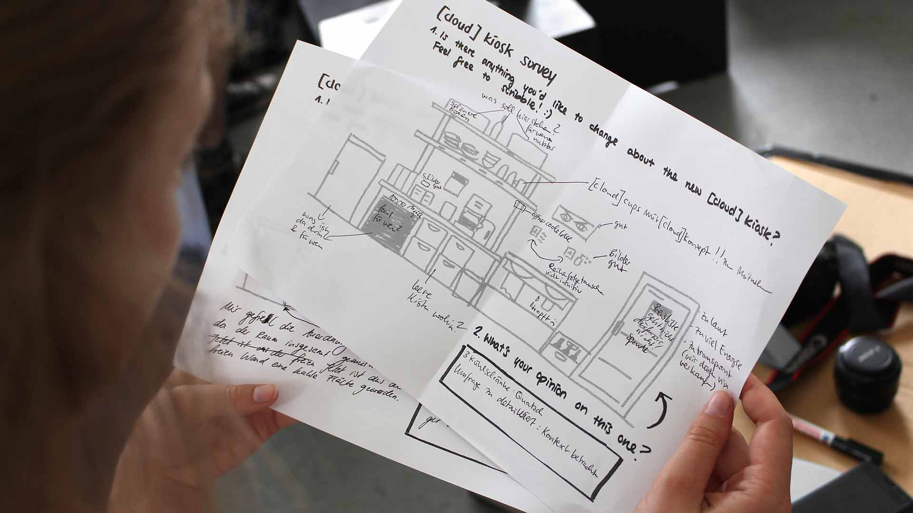

THE CLOUD IS A CONCEPT FOR BUILDING A STUDENT COMMUNITY AND CREATING A PLATFORM FOR DIFFERENT
CHARACTERS TO CONNECT AND INTERCHANGE.
[cloud]
– service
design since & visual communication, 2016 ‐ 2019
It was brought to life by my friends Hannes Wilke and Mathilde Scholz in 2016. Our self-organized
student room is serving as a center. It is a place to get together, work, discuss or simply have a
coffee. We want to give everybody a chance to experiment and co-create in this safe environment.
the [cloud] is a constant prototype. it shapes its own environment and adjusts to new circumstances.
over time, we rearrange the room and further develop our concept. we regularly have admin meetings
or workshops in which we discuss urgent problems and try to find and immediately test possible
solutions. before the [cloud], there was only little life on campus. bachelor and master students
did not actively interact and people had no reason to stay on campus since there was no place to
just work and relax.
what we want to achieve
The [cloud] is voluntarily managed by a group of students called admins. we keep everything in order
and organize workshops or events like the 'monday pitch', a feedback platform. with our wednesday
movie night 'cinema paradiso' and a monthly game night we bring together national and international
students with local people.
You can find out more about the [cloud] concept on our web, Instagram and facebook pages.






#projektfenster
The idea of #projektfenster (project window) started in the cloud but will soon not only be shared
through the clouds social media.
It is a project that gives students, professors,
employees and external people insights in projects of all departments at Anhalt University
in Dessau.
Every Wednesday we present one of the submitted projects on our social media. Since february 2019 we
have the opportunity to also exhibit the submissions in a posterbox in the dessau trainstation as
representation of the universities work.
We are glad that we have the opportunity to showcase the students work in the posterbox in the
trainstation and I plan on developing a website where all the projects will be presented and
people can upload their work.
you can follow our hashtag #projektfenster on instagram.